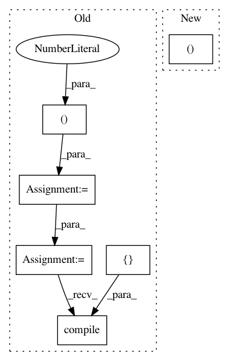

c3eb62763fcc5029c26b025ba1b60d7788d491a1,tests/test_model_saving.py,,test_functional_model_saving,#,109
Before Change
def test_functional_model_saving():
inputs = Input(shape=(3,))
x = Dense(2)(inputs)
outputs = Dense(3)(x)
model = Model(inputs, outputs)
model.compile(loss=losses.MSE,
optimizer=optimizers.Adam(),
metrics=[metrics.categorical_accuracy])
x = np.random.random((1, 3))
y = np.random.random((1, 3))
model.train_on_batch(x, y)
out = model.predict(x)
After Change
def test_functional_model_saving():
model, x = _get_sample_model_and_input()
out = model.predict(x)
_, fname = tempfile.mkstemp(".h5")
save_model(model, fname)
In pattern: SUPERPATTERN
Frequency: 3
Non-data size: 6
Instances
Project Name: keras-team/keras
Commit Name: c3eb62763fcc5029c26b025ba1b60d7788d491a1
Time: 2019-03-30
Author: andhus@kth.se
File Name: tests/test_model_saving.py
Class Name:
Method Name: test_functional_model_saving
Project Name: keras-team/keras
Commit Name: c3eb62763fcc5029c26b025ba1b60d7788d491a1
Time: 2019-03-30
Author: andhus@kth.se
File Name: tests/test_model_saving.py
Class Name:
Method Name: test_model_saving_to_pre_created_h5py_file
Project Name: keras-team/autokeras
Commit Name: 0a80b9769115d291f15c244429793eda4cb8ecad
Time: 2017-12-28
Author: jhfjhfj1@gmail.com
File Name: tests/test_layer_transformer.py
Class Name:
Method Name: test_conv_to_wider_layer